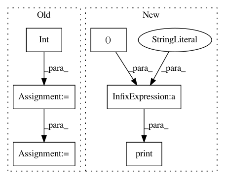

64a2763f3e0ff21c6de3bbbe6cbddab1857fc080,cyclegan/cyclegan.py,CycleGAN,train,#CycleGAN#,157
Before Change
def train(self, epochs, batch_size=128, sample_interval=50):
half_batch = int(batch_size / 2)
start_time = datetime.datetime.now()
for epoch in range(epochs):
// ----------------------
// Train Discriminators
// ----------------------
imgs_A = self.data_loader.load_data(domain="A", batch_size=half_batch)
imgs_B = self.data_loader.load_data(domain="B", batch_size=half_batch)
// Translate images to opposite domain
fake_B = self.g_AB.predict(imgs_A)
fake_A = self.g_BA.predict(imgs_B)
After Change
elapsed_time = datetime.datetime.now() - start_time
// Plot the progress
print ("[Epoch %d/%d] [Batch %d/%d] time: %s [D loss: %f, acc: %3d%%] [G loss: %05f, adv: %05f, recon: %05f, id: %05f]" \
% ( epoch, epochs,
batch_i, self.data_loader.n_batches,
elapsed_time,
d_loss[0], 100*d_loss[1],
g_loss[0],
np.mean(g_loss[1:3]),
np.mean(g_loss[3:5]),
np.mean(g_loss[5:6])))
// If at save interval => save generated image samples
if batch_i % sample_interval == 0:
self.sample_images(epoch, batch_i)
In pattern: SUPERPATTERN
Frequency: 3
Non-data size: 6
Instances
Project Name: eriklindernoren/Keras-GAN
Commit Name: 64a2763f3e0ff21c6de3bbbe6cbddab1857fc080
Time: 2018-04-16
Author: eriklindernoren@gmail.com
File Name: cyclegan/cyclegan.py
Class Name: CycleGAN
Method Name: train
Project Name: eriklindernoren/PyTorch-YOLOv3
Commit Name: bc4dfbcc2ecae4b3a4bedc2bd18909a9208c05cb
Time: 2018-06-01
Author: eriklindernoren@gmail.com
File Name: train.py
Class Name:
Method Name:
Project Name: eriklindernoren/Keras-GAN
Commit Name: d444fdae4b30d35f3cfba98c9fa9e3169cc2cf69
Time: 2018-03-15
Author: eriklindernoren@gmail.com
File Name: discogan/discogan.py
Class Name: DiscoGAN
Method Name: train